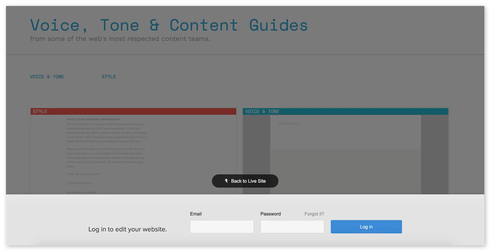
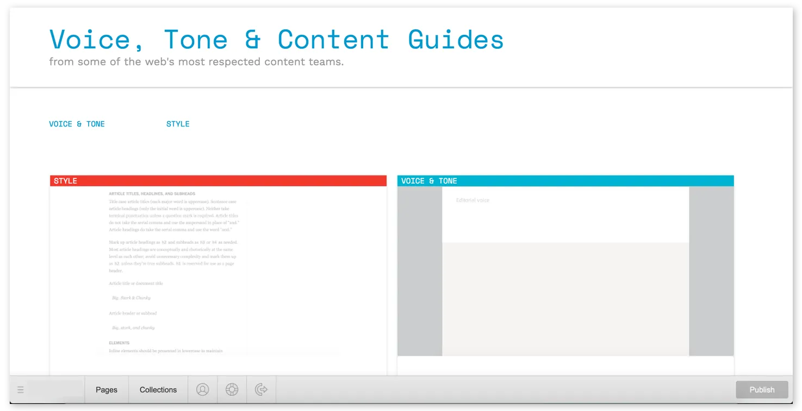
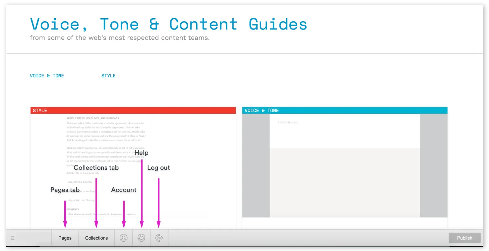
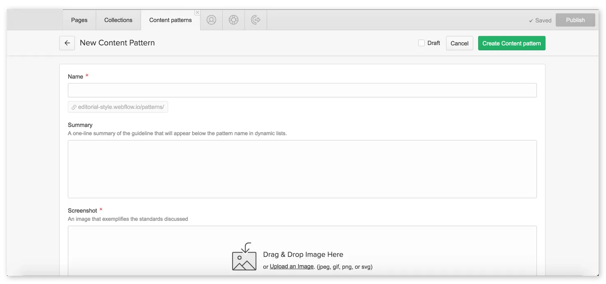

Taking control of your beautiful new website starts with accessing its built-in content management system (CMS for short). And that process usually starts with an email from your website’s designer.
It probably looks a bit like this:
You should've received this email inviting you to your CMS.
When you click that button, you’ll be taken to your website’s CMS — which, at first, will look just like your new website. Except now, you should see a grey bar across the bottom, with a simple form.

To log into your CMS later, just enter the email and password you defined when you first created your account.
Then, just fill in the required fields to create your account, and log in.

Once you're logged in, you'll see your website, but with a new bar along the bottom, where you can manage your pages and Collections.
Now, your content management system should look just like your website — except there’s a toolbar with two browser-like tabs labeled Pages and Collections, plus a series of icons. I'll explain all that below.
For now, take a moment to bookmark this page so you can easily return to it later. In most browsers, you can bookmark a page by holding Command/Control + B.
Otherwise, you can always return to your site’s content management system by simply typing the URL, then adding /?edit to the end.
So if your website’s URL is yourwebsite.com, just go to yourwebsite.com/?edit to log in and start editing.
When you return to your site later, you may see a little pencil icon in the lower right, which you can click to hop into your CMS. Rest assured that only those with access to the CMS will see this icon!
With the basics out of the way, let's dig into the CMS itself.
What's a CMS?
In the world of web design, CMS stands for content management system, and as the name suggests, it's a system for managing the content of your website.
CMSs were invented for two reasons:
To help "non-technical" people maintain their websites
To help everyone publish new content within a consistent design, anytime
What your CMS can do
Your CMS allows you to edit most any existing content on your website, including text (or "copy"), images, buttons, links, etc.
It also allows you to create some new pages and blog posts through Collections.
What your CMS can't do
If you need a new page on your site that doesn't fit one of your Collections, contact me!
Getting to know your CMS
Now that you’ve created an account for your site’s CMS and know how to get back in to it anytime, let’s get to know the interface itself.

Let’s start with the two tabs on the left, Pages and Collections. These are your CMS’s two default tabs. You’ll be able to open more tabs, as you’ll see later, but these two will always be there for you.
Pages tab
The Pages tab, as you might imagine, contains a list of your site’s pages. It’ll be divided into at least two sections, but probably more:
Static pages: these are pages I built outside of your Collections. These may include your homepage, About page, Services/Products, Contact, etc.
Collection pages: these are pages generated from your Collections, and can include things like a blog, help center, documentation, and more. These are listed with their Collection name, like so: Blog Pages.
What you can do in the Pages tab
The Pages tab allows you to do several things:
Search for a page by name: Type a page’s name into the search bar to find it. Note that this is exact-match search, and it only searches the page’s name, so you’ll need to enter a word or words that appear in the page’s name exactly.
Go to a page: Just click the page name in the list to collapse the Pages tab and view the page. Once you’re there, you can add and edit content to your website just like writing in a text editor.
Manage page settings: When you hover your cursor over a page in the list, you’ll see a button labeled “Settings” appear. There, you can manage vital page settings like SEO meta title and description, Open Graph title and description, and Open Graph image.
Managing page settings
Because these page settings are so important for search and social, let’s dig a little deeper into what each of these settings actually means, and how you can make the most of them.
SEO Settings
SEO stands for “search engine optimization.” It’s the practice of building and improving websites in order to improve their chances of being found through search engines like Google, Bing, etc.
In each page’s settings, you can create and edit the following page-specific SEO settings:
Meta title: A page’s title plays a very important role in its visibility and performance in search engines, both because it a) tells search engines what the page is about and b) is what search engine users will click on to reach your site. Be sure to include the types of words people use to describe your business in the title. Ideally, a page’s title should be about 55 to 60 characters long.
Example If I were building a website for a San Francisco Bay Area lawn care company, I’d probably title my homepage “SF Bay Area Lawn Care.” Then I might have other pages like “Berkeley Lawn Care” and “El Cerrito Lawn Care.”
Meta description: The description allows you to add a little more detail about your page (about 150 characters of it). It’s important for search, but not nearly as important as the title.
The Search Result Preview sections shows you what the content you’ve entered will look like on a Google search results page. If any of your text gets cut off in the preview, you’ll want to trim your text to fit.
Open Graph (OG) settings
Open Graph settings are very similar to SEO settings, except that they’re used by social networks like Facebook, Twitter, and LinkedIn. If you use any of these social networks, you’ve seen Open Graph at work many times.
In most cases, you can just tick the checkbox to use the same content as your SEO title and description. But feel free to customize it, if you’d like.
Open Graph also allows you to specify an image to be displayed along with your title and description.
An example of Open Graph image, title, and description on Facebook.
Collections tab
The Collections tab is very similar to the Pages tab, but it only lists your Collection content — the stuff I created with the CMS.
When you click on a Collection, you’ll be taken to a new tab with a list of all the items in the Collection.
Like the Pages tab, there’s a search bar you can use to find items by name.
To start creating a new item within this Collection, click the + New button and fill out the item’s various fields, paying close attention to the help text and other requirements for each.
What you see within an individual Collection item will change based on the structure of the Collection it belongs to, but you’ll see several elements over and over again:
Back button: Click this to go back to the list of items in this Collection
View item button: This light grey button collapses the CMS to show you the item you’re currently viewing right on your live website. If you’d like, you can edit its contents there instead of in this panel.
Status: Shows the current status of the item you’re viewing. Statuses include Published, Not Published, and Draft.
Draft checkbox: Tick this checkbox if you aren’t finished creating or editing the current item. Anything that isn’t marked as a draft will be published when someone clicks the Publish button!
Changelog: As you make changes within your CMS, it will record the number of items and pages you’ve changed until you click Publish. You can click on the changelog to see a list of items and pages that have unpublished changes, along with who made them, if you have fellow CMS users.
View Site: Click this to view your website. You can use any links on your website to move between pages in this view.
The Save and Publish buttons should be fairly self-explanatory. Just note that you’ll need to click Publish twice to confirm your action.
How publishing works in your CMS
Every time you click Publish in your CMS, your whole website gets republished. If you know that others are working on the site when you're ready to publish, you may want to ask them if they're ready for their changes to go live.
Forms tab
Your CMS may include a Forms tab. If it does, you’ll be able to view some basic information from forms people have submitted, but it’s most useful as a place for you to download the complete form data. In the downloaded CSV file (a format that works with all the major spreadsheet apps), you’ll be able to see all the submitted info.
What about those icons?
After the Pages and Collections tabs, you’ll see three icons. From the left, these are:
Account
Shows information about your CMS account, including the associated email, and your photo, if you’ve uploaded one. If you haven’t, you can upload one here.
Help
Provides answers to a few common questions about using the CMS.
Log out
Logs you out of the CMS to view your site as anyone else would.
What's SEO?
SEO stands for "search engine optimization" and, simply put, it's a group of practices designed to ensure that people can find your content when they search for topics you write about on Google, Bing, and other search engines.
Your CMS allows you to customize the "meta title" and "meta description" — two of the most important SEO elements — for every page and Collection on your website.
Creating and managing content
Your CMS gives you two ways to edit content that’s already on your site:
Right on your live web page
Within your Collection items tab
I'll walk you through both (extremely simple) ways to edit, starting with on-page editing.
On-page editing
Editing right on the page is pretty intuitive with your CMS, but there are a few things to know.
Editing text
If you see the pencil icon in the upper right, the element's editable.
When you first log in to your CMS, you’ll see your live website with the CMS panel (the grey bar) collapsed at the bottom of your screen.
If you see some text you want to edit, just hover your cursor over it. If a light grey outline with a pencil icon in the upper right appears, you can edit that content. Just click into the box and start typing!
Editing text works just like it does in Microsoft Word or Google Docs, but styling your text — bolding, italicizing, etc. — works just a little differently. (Though if you’ve used Medium, it’ll feel pretty familiar.)
Just select some text to reveal all your formatting options.
To style text, first select it. A grey toolbar will then pop up, giving you the following options:
B to bold
I to italicize
Chain link icon to insert a link
H1–H6 to create the various levels of headings. The number indicates the level of importance of each heading, with H1 being most important, and H6 the least important. In the images in this section, the phrase “Content patterns” is an H2. Note that most pages only have one H1, so you probably won’t use that often.
“ to create a block quote. This is best used for lengthy quotations.
You can also style text with the following key combinations:
Command/Control + B to bold
Command/Control + I to italicize
Command/Control + K to insert a link
To use a key combination, just press and hold Command (on Mac) / Control (on Windows), then press the letter key (B, I, or K), then release.
Note: Sometimes, a text field will give you fewer options than those listed above. This was likely done intentionally, but if you need more styling options, let me know!
Inserting links
Your CMS allows you to add a variety of link types to achieve various different functionalities.
Adding links takes a couple of clicks, but gives you a host of options.
When you go to insert a link, the toolbar defaults to entering a URL to link to, but if you click the link icon on the left, you can select from several other options:
External: links a visitor to another page on the web, often on another website, but you can also use this to link to another page of your own site.
Page: links a visitor to another page of your site. You’ll see a dropdown list of your site’s pages listed here.
Section: links a visitor to another section of the same page they’re currently viewing. You’ll see a dropdown list of your page’s sections listed here.
Email: links a visitor to their default email app so they can write an email to the address you specify.
Tel: allows a visitor to place a call to the phone number you specify. This is especially useful for people visiting your site from a mobile device.
Each link type offers its own customization options. Click the gear icon to see what’s available for your current link type.
More text editing options
Some areas of text on your website (typically longer passages) will allow for additional options.
Hit return (or enter) and click the + icon to add images, video, rich media, or a simple list.
When you press enter/return to start a new paragraph, you may see a small + icon. Click it to open the toolbar and see the following options.
Image
Allows you to upload an image.
Video
Allows you to insert a video. This must be a video hosted on a platform like YouTube or Vimeo — you can’t upload a video file from your computer.
"Rich media"
Allows you to embed “rich media,” via a link. There are all sorts of objects you can embed using this feature, but here a few of the most popular:
Imgur albums
Google maps
Scribd books
SlideShare presentations
Giphy GIFs
SoundCloud audio
Bulleted list
Allows you to add a bulleted list.
Numbered list
Allows you to add a numbered list.
Everything you’ve just read about editing text on the page also applies when you’re in the Items tab of the CMS.
Editing buttons
Want to edit a button's text or link destination? Just hover over it and look for the gear icon.
You can also edit buttons in the CMS. Just hover your cursor over the button and look for a gear icon in the upper right. Click the gear icon and you’ll see two options:
Edit link settings lets you update the page the button takes viewers to.
Edit text lets you change the text within the button.
Editing images
Replacing images works just like buttons — just hover and look for an icon in the upper right!
You can also replace images on your site with the CMS. Just hover your cursor over the image you want to update, then click the picture icon.
This will open your computer’s file finder, where you can select any image you’d like.
Note: Sometimes, certain visual styles will automatically apply to the image you upload, so don’t be surprised if your image suddenly changes size, acquires a colored border or shadow, etc.
Managing Collection items in bulk
Click the Select... button to manage Collection items in bulk.
Sometimes you'll want to delete, archive, or publish several items all at the same time. In those moments, you can click the Select... button to change the status of multiple items, just like in Gmail. This can be especially handy if you want to publish multiple connected connected pieces (such as a series of articles) all at once.
Creating new content
You can use your CMS to produce new content through any of your Collections, so it’s super easy to create a new blog post, menu item, product or service page — whatever your Collections enable!

This should all be fairly intuitive, and the labels and descriptive text for each field should also help you out immensely. But there are a few things worth calling out:
The Name field
The Name field is a default for all Collections, and it typically does triple-duty as:
The item’s title on your website
The source of the item’s URL on the web
The item’s title within the CMS
There may, however, be separate fields for items 1 and 2.
Image fields
Anywhere you see “Drag & Drop Image Here,” you’re looking at an image field. You can either drag an image from another app on your computer into the CMS, or click the “Upload an Image” link to upload it through your computer’s file management system.
Note that your CMS can’t handle image files over 4MB. If your file is bigger than that, you can use Photoshop or an online tool like TinyPNG or Compressor to get your files under that threshold. Just keep in mind that the larger the image, the longer it takes to load, so try to get your images as small as possible without losing quality.
It’s also up to you to ensure that you have the right to use any images on your website.
Reference fields
If you see any fields with a magnifying glass icon on the right, your Collection has a Reference or Multi-Reference field. This allows you to import content from one Collection into another, which can be used to power things like categories and tags (common blog features).
To use a Reference field, just click into the field and selected the right reference for your new item. If you don’t see the right reference for your new page, you may need to create a new item in the Collection this field references.
This may be explained in the help text for your Collection item, but if it isn’t, contact me for help.
Option field
The Option field works similarly to References, but isn’t connected to another Collection item. So you can just click into the field and pick the right option for the new content. If you need a new Option to fit your content, contact me.
Video field
The video field lets you add a video to your new content. It works by pulling your content from a public video host like YouTube or Vimeo, so you can’t just upload a video file. If you have a video file you want on your site, upload it to YouTube or another service, then just copy and paste the URL into the Video field.
Note: you don’t need the embed code generated by services like YouTube, just the URL.
Switch field
The Switch field is a simple on/off, yes/no toggle that enables or disables functionality on your website. If you’re not sure how this works on your site, ask me.
Color field
The Color field allows you to add a splash of color to your content in a way that your site’s designer defines. The field itself allows you to choose a color visually, from the picker, or to enter what’s called a “hex code” — a numeric representation of the color.
Using the color picker can take a little getting used to at first, but you’ll get the hang of it quickly. The bar on the left represents the whole spectrum of available colors — clicking here will update the color swatch in the middle to a range of tones in the area you clicked. The middle area is where you’ll choose the exact color you want. The bar on the right represents the color’s opacity, which controls how transparent the color is.
If you'll be working with color on your site a lot, you might want to grab the Chrome / Firefox plugin ColorZilla, which essentially lets you copy any color you see on the web to then paste into the color picker.
Managing your editorial workflow
If you’re the only person working with the CMS on your website, you’ll get along just fine writing, editing, and publishing, all within the CMS.
But if your writing and editing team is larger than one, you’ll probably want to use a different tool for writing, sharing, editing, and collaborating on content.
Why? Well, there are two big reasons:
Most writing tools offer more detailed collaboration and editing options, like track changes and commenting
It's always good to have backup copies of anything you publish on your website (just in case someone accidentally deletes something)
Recommended writing and editing tools
Here are a few writing tools that offer a great writing experience, easy collaboration with others, and work well with your CMS, in that you won’t lose formatting when you copy and paste content from them into the CMS.
Writing gets a lot faster when you can keep your fingers on the keys. These key combinations help you do that:
Command/Control + B to bold
Command/Control + I to italicize
Command/Control + K to insert a link
Command/Control + Z to undo what you just did
Use Command on Macs, and Control on Windows.
Google Workspace's Learning Center - https://support.google.com/a/users/answer/9389764
Pro tip: write longer content outside your CMS
For shorter content, you can write and edit right on your live website whenever you'd like.
But for longer content that needs a few extra eyes, it's often better to write, collaborate, and edit in a separate app, and then paste your content into the CMS when you’re ready to publish.
This makes collaboration easier, and Google Docs works particularly well because its heading and formatting options carry right over to the CMS.
However, after pasting your Google Docs content into the CMS, be sure to delete and re-upload your images to ensure they've loaded into your website properly.
You can download images from a Google Doc by going to:
File > Download as > Web Page
Double-click the downloaded ZIP file to unpack it, and you should see a folder labeled "Images."
Editing Collection text
If you edit content that comes from one of your CMS Collections, all other instances of that same text will automatically update across your site.
For example, if you edit the title of a blog post on your blog’s index page, the title will update on the individual blog post’s page, as well as anywhere else it appears on your site.
Editing URLs
To continue with the above example, let's say you edited a blog post's title, and now you realize you want to update the URL to match the new title.
Good thinking, and the good news is that you can also edit the URL in the CMS.
However, this will break any links to the old URL!
Don't worry: I can fix this, but it's best to let me know before you edit the URL.
TODO:
- [ ] Monthly Magazine
You can write any valid HTML like:
<span id="test" class="kool-class" style="color: red;" fs-test-element="test">This is a cool custom HTML string.</span>
And it will be parsed and rendered.
Additionally, you can disable an entire line from being parsed by adding <!-- fs-richtext-ignore --> at the beginning of it:
<!-- fs-richtext-ignore --> <span id="test" class="kool-class" style="color: red;" fs-test-element="test">This is a cool custom HTML string.</span>
<fs-test-element>test</fs-test-element>
[ ] finish Admin Guide Content
[ ] Admin Guide Styling
[ ] rich text styling w/ attributes
{{test}}
List HTML
List Item 2 HTML
50th Anniversary Pictures need formatting into gallery
Building Body of Christ Refine page content/pictures
Our Faith Can we have a sub-menu for the pages under this landing page?
Athletics Goes to Bible Study page, not Youth Athletics
Sunday School Remove first picture
Bible Study Refine page
Choir Refine page
Family Wellness Text needs formatting
Food Pantry Should be under Adult Ministries – found it under Upcoming Events
Parish History Missing content – goes directly to 50th anniversary content
Mom’s Bible Study REMOVE page/tab – we put this under Bible Study instead of a separate page/tab
Greek Festival Text on main page needs to white – unreadable as is